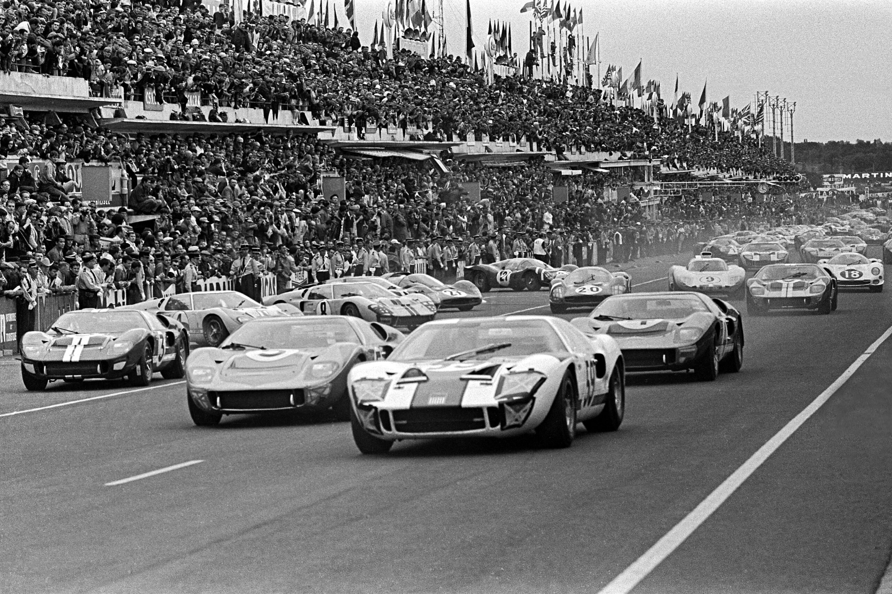

>
Wyścig 24h Le Mans to jedno z najbardziej prestiżowych wydarzeń w świecie wyścigów samochodowych. Pierwsza edycja odbyła się w roku 1923 na torze w Le Mans we Francji. Wyścig jest znany ze swojego nietypowego formatu, w którym zawodnicy rywalizują przez 24 godziny non-stop.
Historia wyścigu Le Mans jest bogata w niesamowite momenty i legendarnych kierowców. W trakcie lat wiele się zmieniało w świecie motorsportu, a wyścig 24h Le Mans odgrywał ważną rolę w rozwoju nowych technologii samochodowych. Wyścig był platformą testową dla innowacyjnych rozwiązań, które później znalazły zastosowanie w samochodach produkcyjnych.
W ciągu lat wiele marek samochodowych zyskało sławę dzięki sukcesom odnoszonym na torze Le Mans. Do najbardziej rozpoznawalnych należą marki takie jak Porsche, Audi, Ferrari czy Ford. Zawodnicy rywalizujący w Le Mans muszą zmierzyć się nie tylko z trudnościami toru, ale także z wymagającymi warunkami pogodowymi i twardą konkurencją.
Wyścig 24h Le Mans jest również znany ze swojego klimatu i atmosfery. Fanów przyciąga nie tylko sama rywalizacja, ale także kempingowe miasteczko, które powstaje na terenie toru i gdzie fani mogą obozować przez cały weekend wyścigu.
Historia Le Mans jest pełna emocjonujących momentów, rekordów prędkości, niesamowitych zwycięstw i niezapomnianych historii. To wydarzenie, które przyciąga zarówno pasjonatów motorsportu, jak i zwykłych fanów samochodów.